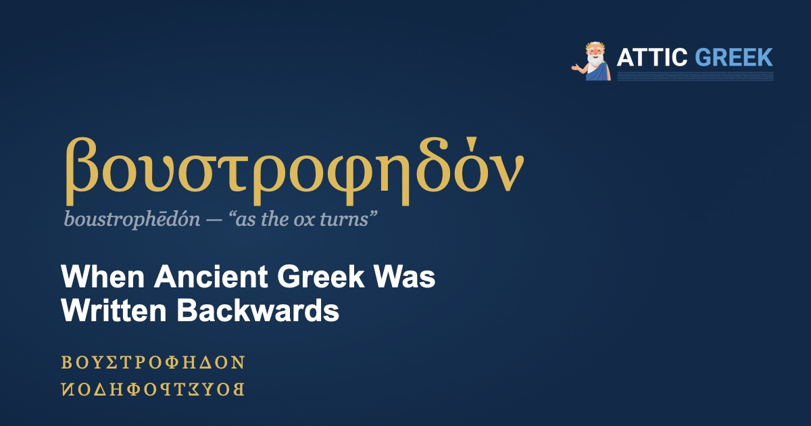

Imagine a page where every second line runs backwards: right to left, with every letter mirrored. For a few centuries, that was a perfectly respectable way to write Ancient Greek.
What is boustrophedon?
The word is Greek: βουστροφηδόν (boustrophēdón), built from βοῦς (bous), “ox,” στρέφω (strephō), “I turn,” and the ending -δόν, “in the manner of.” It means “as the ox turns,” the way a farmer drives the plough to the end of the field, turns, and comes back along the next furrow.
Writers did the same with letters. One line ran left to right, the next right to left, and so on, with the letters mirrored on the backward lines. Even the ancients noticed. The traveler Pausanias, who saw the famous Chest of Kypselos at Olympia in the 2nd century AD, said that some of its inscriptions run straight, while others turn back at the end of the line the way runners do in the double race.
Why would anyone write backwards?
Because that's how their teachers wrote. The Greeks took their alphabet from the Phoenicians, who wrote from right to left, and for a long time Greek writers felt free to go either way. The Dipylon jug, from about 740 BC, is one of the oldest Greek inscriptions we have. It is scratched around the shoulder of the vase from right to left, in mirror-shaped letters, and it marks the jug as a prize for the best dancer.
Boustrophedon was the natural next step. It spares the eye the trip back to the start of the line: when you reach the end, you simply turn around and keep going.
Did it last?
For a while. In Athens, boustrophedon was still being cut into stone around 500 BC: the Agora excavations produced sacred inscriptions of about 510 to 480 BC written this way. The grandest example is the law code of Gortyn on Crete, some 600 lines about marriage, divorce, property and inheritance, carved around 450 BC on the curved wall of a building in the town's agora. After that, left to right wins, and boustrophedon fades through the Hellenistic period.
How do you read it?
Look at the letters. Many Greek letters have a clear direction, and on a backward line they're mirrored. If an Ε has its arms pointing left, the line is running right to left, so start at the right-hand end and read the way the letters face. (We met the five letters of ΧΑΙΡΕ in our article on gravestones; mirror them and you can read them on a backward line.)
So if you ever stand in front of an inscription whose letters seem to face the wrong way, you're probably not misreading it. You're just following the ox.
Learn to read the letters first
Attic Greek teaches Ancient Greek from the alphabet up — 210 structured lessons, quizzes, flashcards, and annotated readings from Homer, Plato, and the great classical authors, with Socrates himself as your guide.
Start with 5 free lessons →Five lessons and the opening of the Odyssey, free forever. Then $4.99/month or $34.99/year.